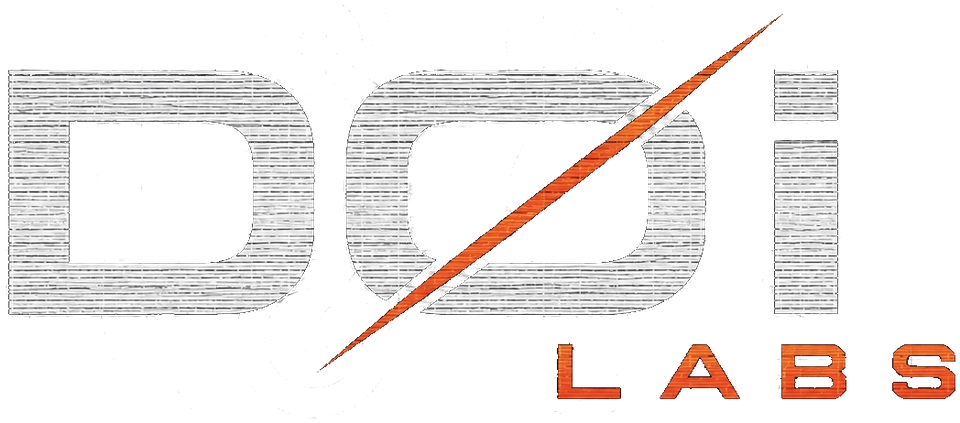
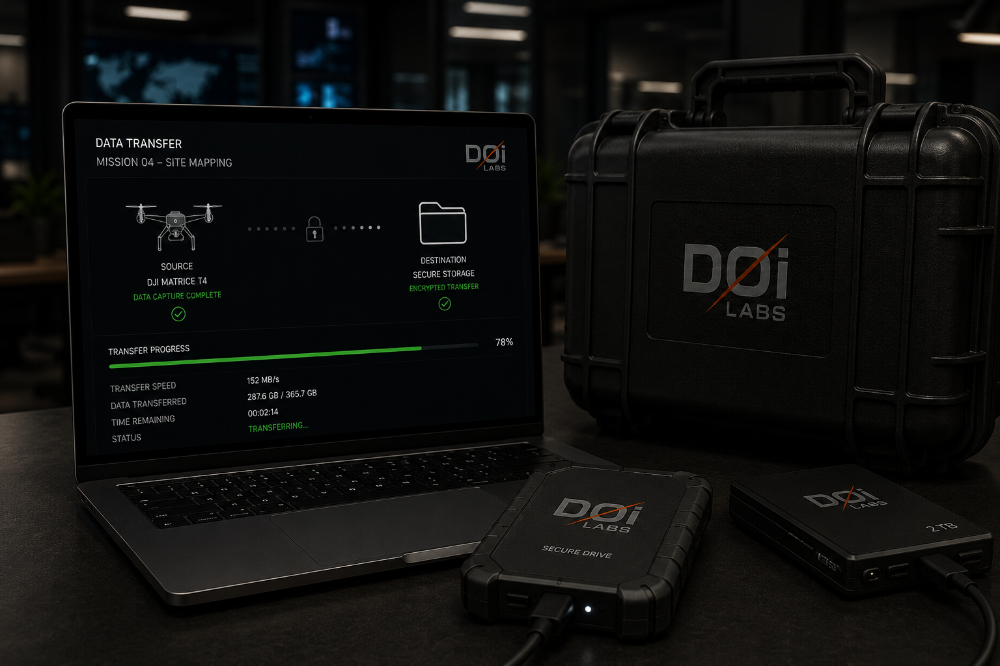

AERIAL
INTELLIGENCE
DØi Labs captures, processes, and transforms aerial data into actionable intelligence using mission-specific aircraft, sensors, and data workflows.
BUILT AROUND THE REQUIREMENT
DØi configures aerial data acquisition, sensing, processing, and analysis around the operational requirement — producing documentation and intelligence designed for how the information will actually be used.
Repeatable aerial documentation for project progress, milestone review, site conditions, QA support, and change comparison.
Visual and thermal data acquisition for commercial, industrial, facility, and infrastructure assets, including difficult-access areas and observable conditions.
Thermal and visual acquisition for applicable roofing, electrical, HVAC, solar, building-envelope, and facility applications.
Structured aerial capture and photogrammetric processing for site visualization, georeferenced imagery, 3D reconstruction, spatial documentation, and project-specific mapping products.
Aerial data acquisition, inspection support, documentation, and processing integrated into larger contractor, engineering, infrastructure, and specialty-project workflows.
Aerial intelligence for manufacturing, aerospace facilities, logistics sites, industrial properties, and large commercial facilities.
OPERATIONAL CAPABILITIES
Six integrated capabilities configure around the mission requirement — from aerial acquisition and sensing through processing, analysis, and delivery.
FROM CAPTURE TO DECISION
A disciplined five-stage workflow transforms mission requirements and aerial data into project intelligence teams can act on.
DEFINE THE MISSION
Establish the operational objective, site conditions, project requirements, areas of interest, and required outputs.
PLAN THE OPERATION
Configure airspace requirements, flight parameters, sensing requirements, capture methodology, and mission-specific operational controls.
CAPTURE THE SITE
Collect repeatable visual, thermal, and spatial data according to the mission plan and required deliverables.
TRANSFORM THE DATA
Process captured data into usable spatial products, comparisons, measurements, models, imagery, and analytical outputs.
DECISION-READY INTELLIGENCE
Package mission outputs into project-specific deliverables designed to support documentation, assessment, coordination, and informed decision-making.
FROM CAPTURE TO DECISION
A disciplined five-stage workflow transforms mission requirements and aerial data into project intelligence teams can act on.
DEFINE THE MISSION
Establish the operational objective, site conditions, project requirements, areas of interest, and required outputs.
PLAN THE OPERATION
Configure airspace requirements, flight parameters, sensing requirements, capture methodology, and mission-specific operational controls.
CAPTURE THE SITE
Collect repeatable visual, thermal, and spatial data according to the mission plan and required deliverables.
TRANSFORM THE DATA
Process captured data into usable spatial products, comparisons, measurements, models, imagery, and analytical outputs.
DECISION-READY INTELLIGENCE
Package mission outputs into project-specific deliverables designed to support documentation, assessment, coordination, and informed decision-making.
The tangible outputs of the capabilities and workflow above, configured to each mission's specific requirements.
Recurring site imagery, milestone records, and change comparisons captured across the project timeline, organized for stakeholder review and project recordkeeping.
Organized visual and thermal imagery paired with annotated findings, structured for review, follow-up, and maintenance planning.
Thermal imagery paired with relevant visible-light context and documented observations, ready for maintenance scheduling and planning workflows.
Georeferenced imagery, photogrammetric reconstruction, spatial data, and project-specific models generated from structured aerial capture — including orthomosaics, point clouds, and surface models.
Structured visual records of assets, facilities, or project areas, organized for consistent reference across inspection, planning, and operational review.
AI-assisted comparisons, flagged areas of interest, organized datasets, and decision-support reporting for project leads.
Side-by-side imagery and organized comparisons across capture dates, highlighting changes in site conditions, progress, or asset status over time.
Organized aerial photography and video from the mission, delivered in standard formats for direct use in documentation, internal review, or visual media.

WHY

LABSPrecision tools, trained operators, and battle-tested workflows. This is the standard we operate at.
DEPLOY RECON DIVISION
Tell us your mission. We'll build the flight plan.
We've received your project details and will respond within one business day with a scope, timeline, and quote.